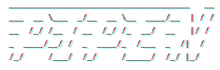

Introduction

**A pipeline framework for python**


 [
[ ]
] ]
] ]
]Documentation | ChangeLog | Examples | API
Features
- Easy to use
- Nearly zero-configuration
- Nice logging
- Highly extendable
Installation
pip install -U pipen
Quickstart
example.py
from pipen import Proc, Pipen
class P1(Proc):
"""Sort input file"""
input = "infile"
input_data = ["/tmp/data.txt"]
output = "outfile:file:intermediate.txt"
script = "cat {{in.infile}} | sort > {{out.outfile}}"
class P2(Proc):
"""Paste line number"""
requires = P1
input = "infile"
output = "outfile:file:result.txt"
script = "paste <(seq 1 3) {{in.infile}} > {{out.outfile}}"
Pipen().set_starts(P1).run()
> echo -e "3\n2\n1" > /tmp/data.txt
> python example.py
[09/13/21 04:23:37] I main _____________________________________ __
[09/13/21 04:23:37] I main ___ __ \___ _/__ __ \__ ____/__ | / /
[09/13/21 04:23:37] I main __ /_/ /__ / __ /_/ /_ __/ __ |/ /
[09/13/21 04:23:37] I main _ ____/__/ / _ ____/_ /___ _ /| /
[09/13/21 04:23:37] I main /_/ /___/ /_/ /_____/ /_/ |_/
[09/13/21 04:23:37] I main
[09/13/21 04:23:37] I main version: 0.1.0
[09/13/21 04:23:37] I main
[09/13/21 04:23:37] I main ╭══════════════════════════════ PIPEN-0 ════════════════════════════════╮
[09/13/21 04:23:37] I main ║ # procs = 2 ║
[09/13/21 04:23:37] I main ║ plugins = ['main', 'verbose-0.0.1'] ║
[09/13/21 04:23:37] I main ║ profile = default ║
[09/13/21 04:23:37] I main ║ outdir = pipen-0_results ║
[09/13/21 04:23:37] I main ║ cache = True ║
[09/13/21 04:23:37] I main ║ dirsig = 1 ║
[09/13/21 04:23:37] I main ║ error_strategy = ignore ║
[09/13/21 04:23:37] I main ║ forks = 1 ║
[09/13/21 04:23:37] I main ║ lang = bash ║
[09/13/21 04:23:37] I main ║ loglevel = info ║
[09/13/21 04:23:37] I main ║ num_retries = 3 ║
[09/13/21 04:23:37] I main ║ plugin_opts = {} ║
[09/13/21 04:23:37] I main ║ plugins = None ║
[09/13/21 04:23:37] I main ║ scheduler = local ║
[09/13/21 04:23:37] I main ║ scheduler_opts = {} ║
[09/13/21 04:23:37] I main ║ submission_batch = 8 ║
[09/13/21 04:23:37] I main ║ template = liquid ║
[09/13/21 04:23:37] I main ║ template_opts = {} ║
[09/13/21 04:23:37] I main ║ workdir = ./.pipen ║
[09/13/21 04:23:37] I main ╰═══════════════════════════════════════════════════════════════════════╯
[09/13/21 04:23:37] I main
[09/13/21 04:23:37] I main ╭───────────────────────────────── P1 ──────────────────────────────────╮
[09/13/21 04:23:37] I main │ Sort input file │
[09/13/21 04:23:37] I main ╰───────────────────────────────────────────────────────────────────────╯
[09/13/21 04:23:37] I main P1: Workdir: '.pipen/pipen-0/p1'
[09/13/21 04:23:37] I main P1: <<< [START]
[09/13/21 04:23:37] I main P1: >>> ['P2']
[09/13/21 04:23:37] I verbose P1: size: 1
[09/13/21 04:23:37] I verbose P1: [0/0] in.infile: /tmp/data.txt
[09/13/21 04:23:37] I verbose P1: [0/0] out.outfile:
/home/pwwang/github/pipen/.pipen/pipen-0/p1/0/output/intermediate.txt
[09/13/21 04:23:38] I verbose P1: Time elapsed: 00:00:01.039s
[09/13/21 04:23:38] I main
[09/13/21 04:23:38] I main ╭═════════════════════════════════ P2 ══════════════════════════════════╮
[09/13/21 04:23:38] I main ║ Paste line number ║
[09/13/21 04:23:38] I main ╰═══════════════════════════════════════════════════════════════════════╯
[09/13/21 04:23:38] I main P2: Workdir: '.pipen/pipen-0/p2'
[09/13/21 04:23:38] I main P2: <<< ['P1']
[09/13/21 04:23:38] I main P2: >>> [END]
[09/13/21 04:23:38] I verbose P2: size: 1
[09/13/21 04:23:38] I verbose P2: [0/0] in.infile:
/home/pwwang/github/pipen/.pipen/pipen-0/p1/0/output/intermediate.txt
[09/13/21 04:23:38] I verbose P2: [0/0] out.outfile:
/home/pwwang/github/pipen/pipen-0_results/P2/result.txt
[09/13/21 04:23:40] I verbose P2: Time elapsed: 00:00:02.074s
[09/13/21 04:23:40] I main
PIPEN-0: 100%|████████████████████████████████████████| 2/2 [00:04<00:00, 0.56 procs/s]
> cat ./pipen-0_results/P2/result.txt
1 1
2 2
3 3
Examples
See more examples at examples/ and a more realcase example at:
https://github.com/pwwang/pipen-report/tree/master/example
Plugin gallery
Plugins make pipen even better.
pipen-verbose: Add verbosal information in logs for pipen.pipen-report: Generate report for pipenpipen-filters: Add a set of useful filters for pipen templates.pipen-diagram: Draw pipeline diagrams for pipenpipen-args: Command line argument parser for pipenpipen-dry: Dry runner for pipen pipelinespipen-cli-init: A pipen CLI plugin to create a pipen project (pipeline)pipen-cli-run: A pipen cli plugin to run a process or a pipeline